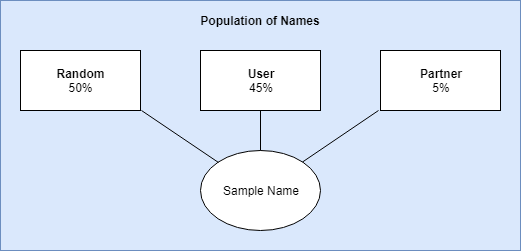

Naming A Baby Part 2
Introduction¶
In part 1 of this series, I introduced a personal conundrum, how can I simplify naming a baby? In this blog post I will discuss how I created clusters of names based on features and sampled them using statistical methods. You do not need a heavy background in statistics or machine learning to follow along.
Choosing Features¶
In order to perform clustering, I needed to identify common traits within names that people consider. When you really start thinking about what you like in a name, it becomes apparent that there is much to consider. Here is a list of features that I derived from names:
Sample name Garen.
1. Percentage of males in the population with this name - 100%
The database of names gives the frequency of individuals with the name since 1880 by both male and female. I simplified it and combined all years into one value. Using the name Garen as an example, you can see that there hasn't been a female with that name on record.
2. Percentage of females in the population with this name - 0%
I used the same logic to compute the percentage of females. Garen was never recorded as a female given name.
3. Percentage of the population with the name
Here I combined the male and female frequency into one value to obtain the popularity of the name.
4. First letter - G
5. First two letters - Ga
6. First three letters - Gar
7. Last letter - n
8. Last two letters - en
9. Last three letters - ren
The beginning and ending letters of a name is pretty easy to obtain by simple string slicing.
10. How to pronounce the name - KRN
I use metaphone to generate this information. It generates a string that creates a sound value. Similar to the name Garen, Karen sounds similar and has the same code of KRN.
11. Number of letters in the name - 5
Here I simply count the number of letters in the name.
Putting It All Together¶
Using the same sample name, Garen, here is what all of the features would look like that is fed into the clustering algorithm.
| Feature | Value |
|---|---|
| % Male | 1 |
| % Female | 0 |
| % Population | 0.000232 |
| First letter | g |
| First two letters | ga |
| First three letters | gar |
| Last letter | n |
| Last two letters | en |
| Last three letters | ren |
| Metaphone | krn |
| Length | 5 |
Clustering Similar Names¶
For clustering, I used the NearestNeighbors algorithm from scikit-learn. It provides a supervised and unsupervised approach to clustering. In this case, for baby name recommendation, I set the minimum number of neighbors to 20 and used the automatic algorithm. Once clustering was finished I created a dictionary of similar names.
For example, looking up names similar to Ladon would give us:
['Ladell',
'Lacy',
'Little',
'Lorenza',
'Lorren',
'Mikell',
'Mikal',
'Laren',
'Lorin',
'Laray',
'Mika',
'Loren',
'Larrie',
'Loran',
'Lindsey',
'Lindsay',
'Micah',
'Micky',
'Lester',
'Mica']
I use the similar names to recommend a name that you may like based on previous likes. The similar names were stored in a Python pickle file and loaded for suggestions while the features of all of the names were stored in a database. The database essentially keeps track of what you like and dislike. This leads us to the more complicated part of the application; sampling.
Sampling and Suggesting Names¶

For sampling, I came up with three strata (groups) with biased weights. These weights are used to compute which group should be sampled from. The weights are multiplied by the number of names that have been liked with a hard cut-off of 10 for the partner and user strata. So if you liked 10 names, the liklihood that it would select a name similar to one that was liked is (liked / total names) user_bias; (10 / 10,832) 0.45. The weights were all calculated this way and normalized from 0 to 1. Once a strata is chosen, I simply selected a name from the cluster group.
To reduce the number of times that you see a name when you dislike it, I added a hard cut-off of two. Essentially, if you did not like a name two or more times, it will never be shown again. This added some necessary logic to check the name that was sampled prior to displaying it. The logic is as follows:
- Compute the biased weights to choose which strata to sample from.
- Sample a name from the given strata.
- If the name is disliked two times or more, repeat steps 1 through 3.
Summary¶
In this post, I illustrated how I created features that were used to cluster names into similar groups. I further illustrated how I used a biased stratified sampling approach to choose a name to show to the user. In the next part of this series I will show you the application and make it freely available.